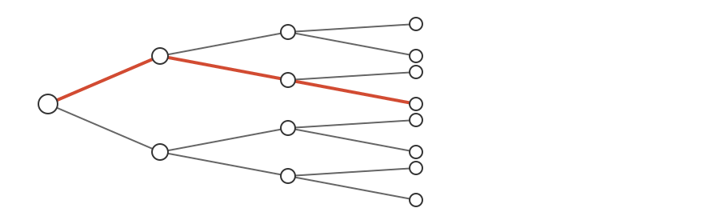
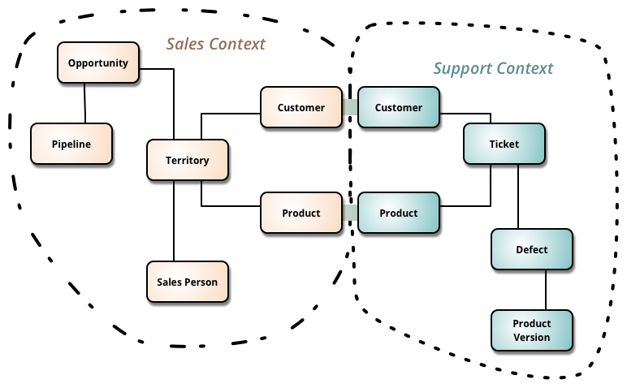
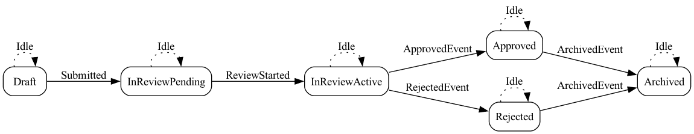
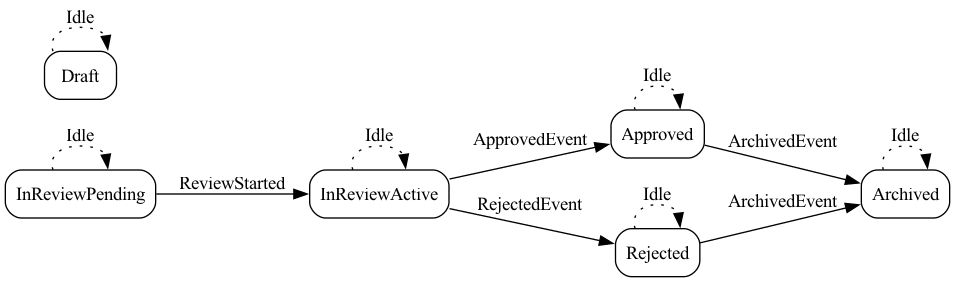
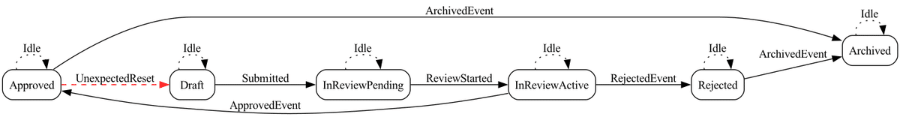

Event: λ Kansai in Winter 2026
2026-01-17
使い回しです！ (ドヤ)
例: 父方の祖父
\[ Father = Parent \cap Male \\ PaternalGrandfather = Father \circ Father \]
例: すべての注文は顧客を持つ
\[ \forall o.\ Order(o) \rightarrow \exists c.\ Customer(c) \land Has(o, c) \]
例: 状態の組み合わせ
\[ |States| = |S_1| \times |S_2| \times \cdots \times |S_n| \]
例: 時間ごとの状態の組み合わせを \(k\) まで連結する
\[ |Trace(k)| = \prod_{t=0}^{k} |States_t| \]
\[ |States_t| = |S_1^t| \times |S_2^t| \times \cdots \times |S_n^t| \]

run (例を探す) / check (反例を探す)SCOPED_STATES =
FROM S1
CROSS JOIN S2
...
CROSS JOIN Sn
BASE = SELECT * FROM SCOPED_STATES WHERE <スコープ/前提/不変条件>
TRACES = BASE × BASE × ... × BASE -- (k+1回)
PROPERTY = SELECT * FROM TRACES WHERE <成立条件>
COUNTEREXAMPLE = SELECT * FROM TRACES WHERE <反例条件>
EXISTS(PROPERTY)
NOT EXISTS(COUNTEREXAMPLE)注意: メタファーなので厳密な説明じゃないよ

abstract sig Status {}
one sig Draft extends Status {}
abstract sig InReview extends Status {}
one sig InReviewPending extends InReview {}
one sig InReviewActive extends InReview {}
one sig Approved extends Status {}
one sig Rejected extends Status {}
one sig Archived extends Status {}
abstract sig EventType {}
one sig Submitted extends EventType {}
one sig ReviewStarted extends EventType {}
one sig ApprovedEvent extends EventType {}
one sig RejectedEvent extends EventType {}
one sig ArchivedEvent extends EventType {}
one sig Idle extends EventType {}sig Reviewer {}
sig Request {
var status: one Status,
var assignedTo: lone Reviewer,
var lastEvent: one EventType // trace 用
}注意: Application と Solver は目的が異なるので compile/runtime の軸で比較しない
pred approve[r: Request] {
// Guard
(r.status = InReviewActive) and (some r.assignedTo)
// 例: 関係操作を使うなら
// some r.(assignedTo.manager) // 合成
// some (~assignedTo).r // 反転
// r in r.(dependsOn^) // 閉包
// Effect
r.status' = Approved
r.lastEvent' = ApprovedEvent
// Frame
r.assignedTo' = r.assignedTo
}pred someAction {
(some r: Request | submit[r]) or
(some r: Request | startReview[r]) or
(some r: Request | approve[r]) or
(some r: Request | reject[r]) or
(some r: Request | archive[r]) or
stutter
}
fact reviewerStaysOnInReview {
always (all r: Request | r.status in InReview implies some r.assignedTo)
}
fact transitions {
always someAction // 性質は LTL として評価される（CTLではない）
}run で「仕様を満たす例」を探すrun を実行するcheck で「仕様を破る例」を探すcheck を実行するVisualizer が使いづらいので自作する
run workflowReviewedApproval {
#Request = 1
#Reviewer = 1
some r: Request |
eventually (
r.lastEvent = Submitted and
eventually (
r.lastEvent = ReviewStarted and
eventually (
r.lastEvent = ApprovedEvent and
eventually (r.lastEvent = ArchivedEvent)
)
)
)
} for 6 but exactly 1 Request, 1 Reviewer, 6 Time$ make test
=== Running Run Commands (Satisfiability) ===
[00] workflowSatisfiable ✓ SAT (1 instances)
[01] workflowReviewedApproval ✓ SAT (1 instances)
[02] workflowRejectedPath ✓ SAT (1 instances)
[03] workflowIdleDraft ✓ SAT (1 instances)
[04] workflowIdleApproved ✓ SAT (1 instances)
[05] workflowIdleRejected ✓ SAT (1 instances)
[08] workflowIdleInReview ✓ SAT (1 instances)
...
✓ All tests passedassert archivedStopsAssignments {
always (
all r: Request |
(r.status = Archived) implies (no r.assignedTo)
)
}
check archivedStopsAssignments for 6 but exactly 1 Request, 1 Reviewer, 6 Time$ make test
...
=== Running Check Commands (Assertions) ===
[06] archivedStopsAssignments ✓ No counterexample
[07] approvalOrRejectionExclusive ✓ No counterexample
✓ All tests passed| Step | Status | Assigned To | Event |
|---|---|---|---|
| 0 | Draft | - | Idle |
| 1 | InReviewPending | Reviewer | Submitted |
| 2 | InReviewActive | Reviewer | ReviewStarted |
| 3 | Approved | Reviewer | ApprovedEvent |
| 4 | Archived | - | ArchivedEvent |
| 5 | Archived | - | Idle |


